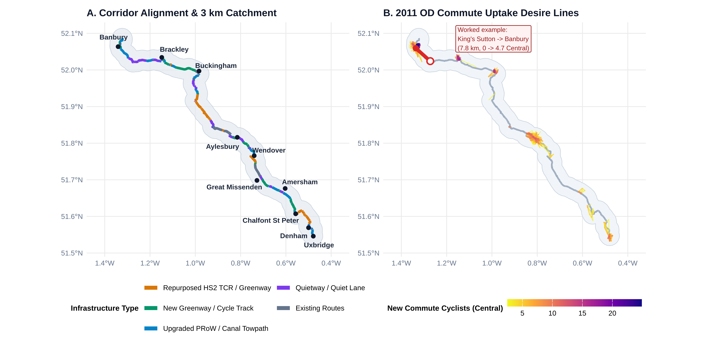
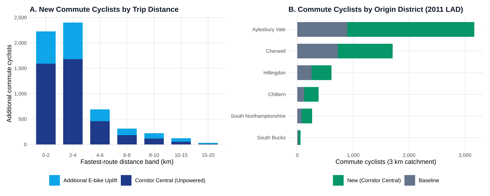

| # | Decision Area | Options to Consider | Recommended Default & Rationale |
|---|---|---|---|
| 1 | Commute baseline & WFH | (a) 2011 Census unadjusted; (b) 2021 Census; (c) 2011 spatial OD scaled to 2026 jobs and post-COVID office days | Option (c): avoids 2021 lockdown distortion; reflects hybrid work via annual days (190-200 vs 220). |
| 2 | Uptake model at full scale | (a) Attenuated PCT OD framework; (b) Full netassign GC discrete choice; (c) Hybrid netassign delta-GC and prop_on_scheme driving unified logit | Option (c) for final business case (full Nellthorp et al. 2026 alignment); Option (a) as transparent benchmark. |
| 3 | Car-diversion share (MECs) | (a) AMAT national default (24% car + 6% taxi); (b) OD-specific proportional diversion; (c) Nested logit separating Walk/Cycle vs Car/PT | Report (a) as TAG Core and (b)/(c) as Sensitivity: rural links (59-62% car share) exceed urban defaults. |
| 4 | Leisure & tourism demand | (a) Empirical NTS/ALS multipliers; (b) Spatial gravity model (residents + stations + campsites) calibrated to trail counters; (c) ORVal integration | Option (b) splitting Other Non-Work Utility vs Exercise & Pleasure (VTT = 0, lower car diversion), cross-checked with (a). |
| 5 | Behavioural ramp-up lag | (a) AMAT instant 100% Year 1; (b) Linear 3-5 yr build-up; (c) Bass S-curve (Central 5-yr maturity) convolved with 5-yr health lag | Option (c): empirically grounded (Goodman et al. 2014) with 3-yr and 8-yr sensitivities to guard against optimism bias. |
| 6 | E-bike segmentation | (a) Pool all cycling as unpowered; (b) Explicit unpowered vs e-bike split (slope/distance elasticity, ~4.5-5.0 METs, ~18-20 km/h) | Option (b): recommended by Nellthorp et al. (2026, s4.2.3) and decisive on 6-15 km rural inter-town links. |
| 7 | Appraisal horizon & TATE3030 | (a) AMAT 20-year; (b) ATE 40-year infrastructure horizon; (c) TAG A1.1 60-year; plus TATE3030 morbidity timing | Option (b) (40 years) as core with 20-year AMAT sensitivity; structure outputs with delta_met_wk for TATE3030. |
| 8 | Spatial aggregation | (a) Whole-corridor unified appraisal; (b) Modular Route Cases / Sections with cross-boundary trips allocated by prop_on_scheme | Option (b) summing cleanly to (a): supports phased local funding without double-counting cross-section trips. |
Active Travel Uptake Modelling: Oxfordshire–Uxbridge Decision Brief
First-Principles Method, Case Study & Choices for Economic Appraisal
Purpose and companion files. This brief is prepared for the consultancy economics team and Dr John Nellthorp (ITS, University of Leeds). It sets out a concise, first-principles active travel uptake method aligned with Active Mode Benefits: Theoretical Framework (Nellthorp et al. 2026), illustrates it on the 112.5 km Oxfordshire-to-Uxbridge section, and highlights eight modelling decisions to agree before scaling to the full 805.6 km North–South Greenway. Prototype audits, full PCT/Bass equations, AMAT validation, supplementary diagnostics, and the 4-table data contract sit in Methods & Appendix.
1 Executive Summary & Decisions to Agree
- Corridor exposure matters: Attenuating Go Dutch by alignment and access distance (\(\omega_{ij}\)) with \(\kappa = 0.50\) reduces 3 km catchment uptake from +16,336 (unattenuated ceiling) to +4,096 new commute cyclists (11.6% mode share), of whom +2,454 (60%) sit on tightly aligned core OD pairs.
- E-bikes unlock rural inter-town links: Conventional cycling peaks at
2–6 km, whereas e-bikes unlock6–15 kmmarket-town corridors (King's Sutton–Banbury,Wendover–Aylesbury,Chalfont St Peter–Uxbridge). - Leisure & ramp-up shift the BCR materially: Commuting is only 29.9% of cycling trips nationally; omitting leisure understates rural greenway demand 3–5×, while a realistic 5-year behavioural ramp-up reduces 40-year commute PVB by 12.0% (from £103.3m to £91.0m on the core commute subset).
- Clear separation for appraisal: Route diversion, car/PT mode shift, and newly generated Exercise & Pleasure trips (\(VTT = 0\)) are kept strictly separate to comply with Nellthorp et al. (2026) double-counting rules.
2 First-Principles Uptake Method
Following Nellthorp et al. (2026) (§3.1.1), demand modelling and welfare valuation must be specified jointly using the same Generalised Cost (\(GC_r = -U_r / \beta\); Wardman and Toner (2020)) attributes on route \(r\) connecting \((i, j)\):
\[ \begin{aligned} GC_{ij,r} &= \sum_{n \in r} \Bigl( m\,v_t\,t_n + v_s\,s_n + v_e\,e_n + v_c\,c_n \Bigr) + \frac{U_{\text{pre}} + U_{\text{post}}}{\beta} \\ &\approx \int_{0}^{T_r} \Bigl[ \beta + q(t) + e(t) \Bigr]\,\mathrm{d}t + \frac{U_{\text{pre}} + U_{\text{post}}}{\beta} \end{aligned} \tag{1}\]
where \(t_n\) is travel time (access multiplier \(m = 2.0\)), \(s_n\) is perceived safety threat (the dominant cycling deterrent; Department for Transport (2024)), \(e_n\) is net physical exertion (MET-hours, lower for e-bikes), \(c_n\) is ambience and comfort (upgrading to an off-road segregated track is valued at 16.28 p/min in 2023 prices; Department for Transport (2025)), and \(q(t)\) captures continuous traffic/surface conditions (Kouwenhoven et al. 2023).
That cost reduction \(\Delta GC_{ij} < 0\) drives three margins that appraisal must keep separate:
- Route choice (diversion): Existing cyclists switch from parallel A/B roads onto the greenway (\(\text{new trips} = 0\); Journey Ambience & external safety benefits only).
- Mode choice (mode shift): Existing travellers switch from car, PT, or walking onto cycling (Rule-of-a-Half \(\Delta CS\), full TATE3030/AMAT health & absenteeism benefits, plus TAG Unit A5.4 car-diversion MECs).
- Trip generation (induced demand): New utility or Exercise & Pleasure trips (Rule-of-a-Half \(\Delta CS\) with \(VTT = 0\) for Exercise & Pleasure, full health benefits, zero car decongestion MECs).
To avoid crediting 100% of an area-wide Go Dutch network scenario (Lovelace et al. 2017) to a single linear greenway, we attenuate each 2011 Census OD pair by a dimensionless corridor exposure weight \(\omega_{ij} \in [0, 1]\):
\[ \omega_{ij} = \phi_{ij} \cdot \exp\!\left(-\frac{a_i + a_j}{L_a}\right) \tag{2}\]
where \(\phi_{ij} \in [0, 1]\) is the desire-line share within a 1.5 km corridor buffer, \(a_i, a_j\) are endpoint centroid distances (m) to the spine, and \(L_a = 3{,}000\text{ m}\). Steady-state commute cyclists \(C^{1}_{ij}\) are then bounded between observed baseline \(C^{0}_{ij}\) and the PCT upper-envelope reference \(C^{\text{ref}}_{ij}\) (Go Dutch Central \(\kappa = 0.50\); E-bikes High \(\kappa = 0.60\)):
\[ C^{1}_{ij} = \min\!\Bigl(N_{ij},\; C^{0}_{ij} + \kappa\,\omega_{ij}\,\max\bigl(0,\; C^{\text{ref}}_{ij} - C^{0}_{ij}\bigr)\Bigr) \tag{3}\]
Full PCT logistic equations and an audit of the existing railactive prototype scripts are given in Methods & Appendix (see also the prototype audit).
3 Oxfordshire–Uxbridge Case Study (112.5 km)
We test the framework on the 112.5 km Oxfordshire-to-Uxbridge spine (v0.5.2, Sections 13 to 11, 234 links from Banbury via Brackley, Calvert, Aylesbury, Wendover, and Amersham to Uxbridge). Over 64% (72 km) consists of off-road or segregated assets (detailed breakdown in Methods & Appendix).

Across all inter-LSOA 2011 Census commute pairs (\(\le 20\text{ km}\)) within 3 km of the spine (3,657 OD pairs, 53,440 commuters; 59.1% car driver, 22.2% walking, 3.92% cycling), the core corridor-aligned subset (endpoints \(\le 1.5\text{ km}\), \(\phi_{ij} \ge 0.70\), distance \(1.5\text{–}20\text{ km}\)) isolates 1,463 pairs and 23,217 commuters (4.29% baseline cycling).
| Scenario | 3 km Cyclists | 3 km New | 3 km Share | Core Cyclists | Core New | Core Share |
|---|---|---|---|---|---|---|
| Baseline (2011 Census Observed) | 2,096 | 0 | 3.9% | 996 | 0 | 4.3% |
| PCT Government Target (National Benchmark) | 4,938 | 2,842 | 9.2% | 2,333 | 1,337 | 10.1% |
| Corridor Central (50% Go Dutch, attenuated) | 6,192 | 4,096 | 11.6% | 3,450 | 2,454 | 14.9% |
| Corridor High (60% E-bikes, attenuated) | 8,106 | 6,010 | 15.2% | 4,599 | 3,603 | 19.8% |
| PCT Go Dutch (Unattenuated Area Ceiling) | 18,432 | 16,336 | 34.5% | 8,413 | 7,417 | 36.2% |
| PCT E-bikes (Unattenuated Area Ceiling) | 22,190 | 20,094 | 41.5% | 10,089 | 9,093 | 43.5% |
Three appraisal lessons emerge directly from Table 2 and Figure 2:
- Exposure attenuation prevents over-claiming: Unattenuated Go Dutch (+16,336) overstates single-corridor impact; attenuating by \(\omega_{ij}\) yields +4,096 Central new cyclists (11.6% share), with 60% (+2,454) on tightly aligned core links (14.9% share).
- Nodal clustering vs rural gaps: Commute demand clusters around Aylesbury, Banbury, Uxbridge/Denham, and Amersham; rural mid-corridor sections (Calvert–Finmere) depend heavily on leisure/tourism and e-bikes.
- E-bikes shift the distance curve: Unpowered cycling peaks at
2–6 km, whereas e-bikes unlock the6–15 kminter-settlement band.

4 Worked Example, Leisure Extension & Temporal Lag
4.1 King’s Sutton to Banbury (E01027288 -> E01028435)
- Observed 2011 baseline: \(N_{ij} = 55\) commuters (0 cyclists, 1 walker, 34 car drivers [61.8%%], 8 car passengers, 7 bus, 5 rail); \(d_{ij} = 7.84\text{ km}\), slope \(g_{ij} = 1.50\%\). Centroids sit 246 m and 400 m from the spine with \(\phi_{ij} = 1.00\), giving \(\omega_{ij} = 0.8064\).
- PCT propensities & corridor uptake: Evaluating Equation 3 between observed baseline (
0), Go Dutch (\(p^{\text{Dutch}} = 21.29\%\), 11.71 cyclists), and E-bikes (\(p^{\text{ebike}} = 31.82\%\), 17.50 cyclists) yields 4.72 steady-state commute cyclists (8.6% share) under Corridor Central (8.97 one-way trips/day at AMAT’s1.9return factor, 15,471 cycle-km/yr over220days) and 8.47 cyclists (16.09 trips/day) under Corridor High (E-bikes). - Car diversion sensitivity: Proportional non-cycle diversion implies 61.8% (2.92 cyclists) divert from car driver — more than double AMAT’s
24%national urban default (+6%taxi; Department for Transport (2025)).
Further diagnostic plots for this pair and three Buckinghamshire/Uxbridge comparisons appear in Methods & Appendix.
4.2 Extending to Leisure & Exercise/Pleasure Trips
As documented in Methods & Appendix, commuting accounts for only 29.9% of cycling trips (NTS) and 29.5% of cycling time (ALS), whereas leisure represents 39.7% of trips and 70.5% of minutes. Following Nellthorp et al. (2026) (§1.4.1, Table 2), appraisal must separate Exercise & Pleasure (marginal \(VTT = 0\), full Journey Ambience & health benefits, lower car-diversion MECs) from Other Non-Work Utility (shopping, education, station access). We propose a two-tier extension:
- Tier 1 (Screening): Apply calibrated purpose multipliers (
1.5×local leisure +0.5×other utility onKing's Sutton–Banburyadds+13.5leisure and+4.5other-utility trips/day to8.97commute trips). - Tier 2 (Full corridor): Run a spatial gravity model linking LSOAs, rail stations, and OSM campsites to greenway attractors with longer leisure decay (\(L \approx 6\text{–}9\text{ km}\)) calibrated to rural trail counters.
4.3 Behavioural Ramp-Up Convolved with AMAT Health Lags
Over ATE’s 40-year appraisal period (3.5% transport / 1.5% health discounting; Nellthorp et al. (2026) §2.3; HM Treasury (2026)), AMAT applies 100% demand in Year 1 plus a 5-year linear physiological health lag. Because real-world route uptake builds over 3–8 years (Goodman et al. 2014), we convolve a Bass diffusion S-curve (Bass 1969) with AMAT’s 5-year health lag (equations in Methods & Appendix).

| Adoption Profile | Yr 1 Share | Yr 3 Share | Yr 5 Share | 40-Yr Transport PV (3.5%) | 40-Yr Health PV (1.5%) |
|---|---|---|---|---|---|
| Instant (AMAT Default) | 100% | 100% | 100% | 1.000 (+0.0%) | 1.000 (+0.0%) |
| Fast Ramp-Up (3-yr) | 12% | 68% | 94% | 0.918 (-8.2%) | 0.937 (-6.3%) |
| Central Ramp-Up (5-yr) | 6% | 39% | 73% | 0.867 (-13.3%) | 0.896 (-10.4%) |
| Slow Ramp-Up (8-yr) | 3% | 18% | 39% | 0.777 (-22.3%) | 0.820 (-18.0%) |
Under the 5-year Central ramp-up, 40-year transport PV falls by 13.3%, whereas health PV falls by 10.4% because 1.5% health discounting weights later decades more heavily than 3.5% transport discounting.
5 Illustrative Economic Scale & Double-Counting Guardrails
Passing just the core aligned commute subset (1,463 pairs, +2,454 cyclists = +4,663 daily trips, mean distance 3.43 km, prop_on_scheme = 0.72, 220 days/yr, 2030–2069, 24% AMAT default car diversion) through railactive/amat yields £103.3m PVB instant jump, or £91.0m (-12.0%) with the 5-year ramp-up — before adding TATE3030 morbidity, walking, education, or leisure/tourism.
| Appraisal Stream | Instant PVB (£m) | 5-Yr Ramp PVB (£m) | Share of PVB | Valuation Basis |
|---|---|---|---|---|
| Health (Premature Death) | 48.50 | 43.44 | 47.8% | WHO HEAT / TAG mortality reduction |
| Journey Ambience | 39.67 | 34.39 | 37.8% | Rule of a Half at 16.28 p/min off-road |
| Workplace Absenteeism | 8.65 | 7.50 | 8.2% | 0.25 days/yr avoided for employed switchers |
| Decongestion & Environmental MECs | 6.52 | 5.65 | 6.2% | Congestion £5.43m, Accidents £0.56m, GHGs £0.32m, Tax £0.15m, Noise/AQ £0.06m |
| Total Core Commute PVB | 103.34 | 90.98 | 100.0% | Overall ramp-up impact: -12.0% |
Because 86% of core commute PVB sits in Health and Journey Ambience, all outputs will enforce Nellthorp et al. (2026) (Table 13) double-counting rules via the 4-table hand-off schema in Methods & Appendix:
ImportantDouble-Counting Compliance Summary (Nellthorp et al. 2026, Table 13)
- User benefits vs health (Recs 1–2): Retain \(\theta \approx 0\) so Journey Ambience and AMAT/TATE3030 health benefits remain additive.
- Rule of a Half (§2.4): Apply RoH only to \(\Delta CS\) / Journey Ambience — never halve physical-activity health benefits or MECs.
- User benefits vs safety (Recs 3–6): Journey Ambience (16.28 p/min) embeds users’ perceived safety WTP; add only external casualty outcomes and mode-shift safety MECs.
- Place quality (Recs 7–10): Value origin/destination place quality only for dwell/movements strictly outside modelled trips.
- Exercise & Pleasure VTT (§1.4.1): Set marginal \(VTT = 0\) for Exercise & Pleasure trips while retaining Journey Ambience and health benefits.
6 References
Bass, Frank M. 1969. “A New Product Growth for Model Consumer Durables.” Management Science 15 (5): 215–27. https://doi.org/10.1287/mnsc.15.5.215.
Department for Transport. 2024. National Travel Attitudes Study (NTAS) Wave 9: Cycling. Department for Transport, London. https://www.gov.uk/government/statistics/national-travel-attitudes-study-wave-9/national-travel-attitudes-study-ntas-wave-9-cycling.
Department for Transport. 2025. Active Mode Appraisal Toolkit (AMAT). Department for Transport, London (TAG Data Book May 2026 release / 2023 prices). https://www.gov.uk/government/publications/tag-unit-a5-1-active-mode-appraisal.
Goodman, Anna, Shannon Sahlqvist, and David Ogilvie. 2014. “New Walking and Cycling Routes and Increased Physical Activity: One- and 2-Year Findings from the UK iConnect Study.” American Journal of Public Health 104 (9): e38–46. https://doi.org/10.2105/AJPH.2014.302059.
HM Treasury. 2026. The Green Book: Central Government Guidance on Appraisal and Evaluation (and Supplementary Guidance on Discounting). HM Treasury. https://www.gov.uk/government/publications/the-green-book-appraisal-and-evaluation-in-central-government.
Kouwenhoven, Marco, Jeroen Muller, Sebastiaan Thoen, Jasper Willigers, and Gerard de Jong. 2023. Values of Time, Reliability and Comfort in the Netherlands 2022: New Values for Passenger Travel and Freight Transport. Technical Report. Significance.
Lovelace, Robin, Anna Goodman, Rachel Aldred, Nikolai Berkoff, Ali Abbas, and James Woodcock. 2017. “The Propensity to Cycle Tool: An Open Source Online System for Sustainable Transport Planning.” Journal of Transport and Land Use 10 (1): 505–28. https://doi.org/10.5198/jtlu.2016.862.
Nellthorp, John, Thijs Dekker, and Richard Batley. 2026. Active Mode Benefits: Theoretical Framework. Report to Active Travel England. Institute for Transport Studies, University of Leeds. https://www.gov.uk/government/publications/benefits-of-walking-wheeling-and-cycling-theoretical-framework.
Wardman, Mark, and Jeremy Toner. 2020. “Is Generalised Cost Justified in Travel Demand Analysis?” Transportation 47 (1): 75–108. https://doi.org/10.1007/s11116-017-9850-7.